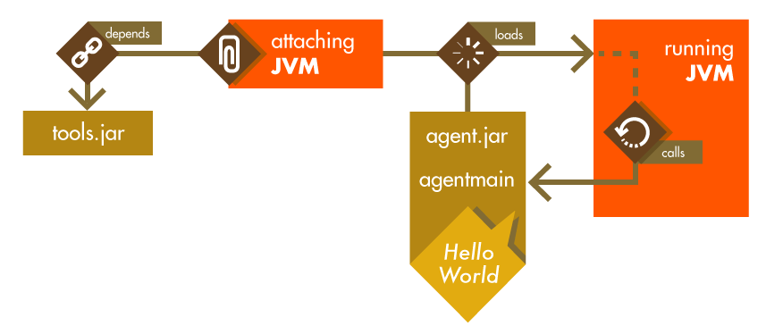

目录 [−]
原文: Fixing Bugs in Running Java Code with Dynamic Attach by Rafael Winterhalter
开源中国组织翻译: 在 Java 中运用动态挂载实现 Bug 的热修复 by TedCruz、
无若、LeoXu、Tocy等。
大多数 JVM 具备 Java 的 HotSwap 特性，大部分开发者认为它仅仅是一个调试工具。利用这一特性,有可能在不重启 Java 进程条件下，改变 Java 方法的实现。典型的例子是使用 IDE 来编码。然而 HotSwap 可以在生产环境中实现这一功能。通过这种方式，不用停止运行程序，就可以扩展在线的应用程序，或者在运行的项目上修复小的错误。这篇文章中，我将演示动态绑定、应用运行期代码变化进行绑定、介绍一些工具 API 以及 Byte Buddy 库，这个库提供了一些 API 代码改变更方便。
假设有一个正在运行的应用程序，通过校验 HTTP 请求中的 X-Priority 头部，来执行服务器的特殊处理。该校验使用下面的工具类来实现:
|
|
你发现拼写错误了吗 (Pirority)？这样的错误很常见，尤其是在测试代码中常量值分解为静态字段重用。在不太理想的情况下，这个错误只会在产品被安装的时候才被发现，其中头通过另外一个应用生成并没有拼写错误。
修复这样的错误并不难。在持续交付的时代，重新部署一个新的版本只需要点击一下按钮。但在其他情况下，变更可能就不是那么简单了，重新部署过程可能比较复杂，其中停机是不允许的，带着错误运行可能会比较好。但 HotSwap 给我们提供了另外一种选择：在不重启应用的前提下进行小幅改动。
Attach API：使用动态附件来渗透另外一个 JVM
为了修改一个运行中的 Java 程序，我们首先需要一种可以同处在运行状态的 JVM 进行通信的方式。因为 Java 的虚拟机实现是一个受到管理的系统，因此拥有进行这些操作的标准 API。提问中涉及到的 API 被称作 attachment API，它是官方 Java 工具的一部分。使用这个由运行之中的 JVM 所暴露的 API，能让第二个 Java 进程来同其进行通信。
事实上，我们已经用到了该 API: 它已经由诸如 VisualVM 或者 Java Mission Control 这样的调试和模拟工具进行了应用。应用这些附件的 API 并没有同日常使用的标准 Java API 打包在一起，而是被打包到了一个特殊的文件之中，叫做 tools.jar，它只包含了一个虚拟机的 JDK 打包发布版本。更糟糕的是，这个 JAR 文件的位置并没有进行设置，它在 Windows、Linux，特别是在 Macintosh 上的 VM 都存在差别，不光文件的位置，连文件名也各异，有些发行版上就被叫做 classes.jar。最后，IBM 甚至决定对这个 JAR 中包含的一些类的名称进行修改，将所有 com.sun 类挪到 com.ibm 命名空间之中, 又添了一个乱子。在 Java 9 中，乱糟糟的状态才最终得以清理，tools.jar 被 Jigsaw 的模块 jdk.attach 所替代。

在对 API 的 JAR (或者模块) 进行了定位之后，我们就该让其对附件进程可用。在 OpenJDK 上，被用来连接到另外一个 JVM 的类叫做 VirtualMachine，它向任何由位于同一台物理机器上的 JDK 或者是一个普通的 HtpSpot JVM 所运行的 VM 提供了一个入口点。在通过进程 id 附加到另外一台虚拟机上之后，我们就能够在目标 VM 指定的一个线程中运行一个 JAR 文件：
|
|
在收到一个 JAR 文件之后，目标虚拟机会查看该 JAR 的程序清单描述文件（manifest），并定位处在 Premain-Class 属性之下的类。这非常类似于 VM 执行一个main方法的方式。有了一个 Java 代理，VM 和指定的进程 id 就可以查找到一个名为 agentmain 的方法，该方法可以由指定线程中的远程进程来执行:
|
|
使用该 API，只要我们知道一个 JVM 的进程 id，就可以来在其上运行代码，打印出一条 Hello, World! 消息。甚至有可能同并不熟 JDK 发行版一部分的 JVM 进行通信，只要附加的 VM 是一个用来访问 tools.jar 的 JDK 安装程序。
Instrumentation API：修改目标 VM 的程序
到目前来看一切顺利。但是除了成功地同目标 VM 建立起了通信之外，我们还不能够修改目标 VM 上的代码以及 BUG。后续的修改，Java 代理可以定义第二参数来接收一个 Instrumentation 的实例 。稍后要实现的接口提供了向几个底层方法的访问途径，它们中的一个就能够对已经加载的代码进行修改。
为了修正 "X-Pirority" 错字，我们首先来假设为 HeaderUtility 引入了一个修复类，叫做 typo.fix，就在我们下面所开发的 BugFixAgent 后面的代理的 JAR 文件中。此外，我们需要给予代理通过向 manifest 文件添加 Can-Redefine-Classes: true 来替换现有类的能力。有了现在这些东西，我们就可以使用 instrumentation 的 API 来对类进行重新定义，该 API 会接受一对已经加载的类以及用来执行类重定义的字节数组：
|
|
运行上述代码后，HeaderUtility 类会被重定义以对应其修补的版本。对 isPrivileged 的任何后续调用现在将读取正确的头信息。作为一个小的附加说明，JVM 可能会在应用类重定义时执行完全的垃圾回收，并且会对受影响的代码进行重新优化。 总之，这会导致应用程序性能的短时下降。然而，在大多数情况下，这是较之完全重启进程更好的方式。
当应用代码更改时，要确保新类定义了与它替换的类完全相同的字段、方法和修饰符。 尝试修改任何此类属性的类重定义行为都会导致 UnsupportedOperationException。现在 HotSpot 团队正试图去掉这个限制。此外，基于 OpenJDK 的动态代码演变虚拟机支持预览此功能。
使用 Byte Buddy 来追踪内存泄漏
一个如上述示例的简单的 BUG 修复代理在你熟悉了 instrumentation 的 API 的时候是比较容易实现的。只要更加深入一点，也可以在运行代理的时候，无需手动创建附加的 class 文件，而是通过重写现有的 class 来应用更多通用的代码修改。
字节码操作
编译好的 Java 代码所呈现的是一系列字节码指令。从这个角度来看，一个 Java 方法无非就是一个字节数组，其每一个字节都是在表示一个向运行时发出的指令，或者是最近一个指令的参数。每个字节对应其意义的映射在 《Java 虚拟机规范》 中进行了定义，例如字节 0xB1 就是在指示 VM 从一个带有 void 返回类型的方法返回。因此，对字节码进行增强就是对一个方法的字节数字进行扩展，将我们想要应用的表示额外的业务逻辑指令包含进去。
当然，逐个字节的操作会特别麻烦，而且容易出错。为了避免手工的处理，许多的库都提供了更高级一点的 API，使用它们不需要我们直接同 Java 字节码打交道。这样的库其中就有一个叫做 Byte Buddy (当然我就是该库的作者)。它的功能之一就是能够定义可以在方法原来的代码之前和之后被执行的模板方法。
分析一个发生泄漏的应用程序
这里的示例假定一个应用程序在生产环境运行了几周之后，被发现发生了泄漏资源的现象。像这样的 BUG 很难去跟踪，因为在一个可观察的测试环境中重现这样一个类似的问题状态比较困难。因此，（目前）要排除这样的问题除了重新启动崩溃的应用程序之外，我们还可以在当前线程中修改应用程序的代码来对泄漏进行跟踪。为了找出哪里才是应用程序泄漏句柄的位置，我们会对任何 Closableobject 的生命周期进行跟踪。使用一个 Java 代理，我们可以修改任何构造，或者关闭任意一个这样的对象。有了这个信息，我们就有希望确认哪个对象在哪种情况下会发生泄漏。
使用模板进行操作
为了实现这一行为，我们首先要定义模板，模板里面包含了我们想要添加到任意一个 Closeable 的对象的构造器或者关闭方法调用中去的代码。为了了解发生泄漏的对象是在哪里被创建或者关闭的，我们就会想要在每一个这样的时间发生时将跟踪栈打印出来。针对这一逻辑的模板方法代码如下:
|
|
模板方法上加上了 OnMethodExit 和 OnMethodEnter 注解，以通知 Byte Buddy 我们会想要它在什么时候被调用。它们的任何参数都会被加上注解，以指定其在被重新定义的方法中所表示的值。当应用了该模板时，Byte Buddy 接着就会将任何针对一个参数的访问映射到对注解的值进行加载，就好像方法实例一般就是由this来表示的。
为了将该修改应用到任何实现了 Closable 接口的类，Byte Buddy 提供了一种特定领域语言用以创建来匹配类型和方法的 Java 代理，并在其可应用时对上述模板进行应用：
|
|
在默认情况下，Byte Buddy 不会对位于 java.* 命名空间中定义的类进行修改，它们可以通过设置一个无效的忽略匹配器来被修改。此外， Byte Buddy 需要在我们对重新转换进行应用的时候被告知不要去修改我们前面讨论过的 class 文件格式。只有这样做，Byte Buddy 才可以自动地侦测到任何实现了 Closable 接口的现有或者未来将会有的类型，并将上述的模板代码添加到其构造器和关闭方法。
附加代理
Byte Buddy 还提供了在运行时附加一个代理的便利方法。为了应对 tools.jar 位置和虚拟机类型的差异, Byte Buddy 给附件添加了一个抽象层，在这一层可以自动检测到正确的设置。在将上述的代理打包到一个 JAR 文件中之后，就可以通过调用如下代码来附加到发生资源泄漏的进程：
|
|
当然，上述代理很快就会为手动处理创建太多的输出。为了提供更多的便利，在释放之前再来收集被创建的对象也许会更有用。通过创建一个 Java 代理，这样也可以同编写一个 Java 应用程序来实现此行为一样的简单。
总结
在本文中，我们深入了解了 attach API，它使得将一个 Java 代理按顺序注入到任意一个运行中的 JVM 进程成为可能。该代理被表示为一个 JAR 文件，里面包含了一个类，类里面有一个远程进程可以在一个指定线程中执行的 agentmain 方法。该方法可以接收一个 Instrumentation 接口的实例作为参数，可以读已经加载的类进行重新定义。对代码的重定义，既可以通过用打了补丁的版本替换整个 class 文件来实现，也可以通过对现有类的字节码进行修改来实现，这样的操作可以比较简单的用诸如 Byte Buddy 这样的库来完成。